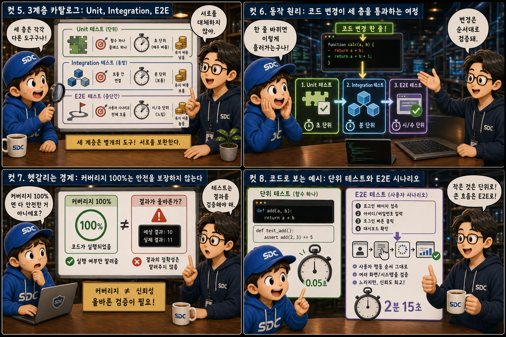
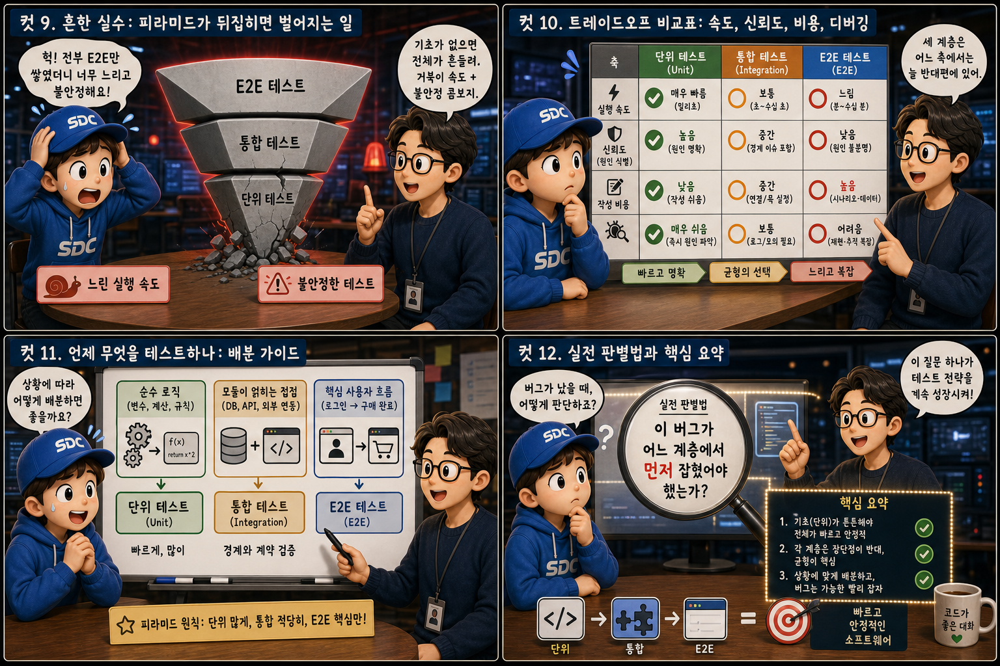

넓은 기반 위에 좁은 꼭대기를 얹은 피라미드에 비유해, 버그를 어디서 얼마나 촘촘하게 잡을지 12컷으로 풀어봅니다.
UnitIntegrationE2E
소프트웨어 품질을 지키는 방법은 하나가 아니라 세 겹입니다. 이 세 겹을 얼마나 균형 있게 쌓느냐가 버그를 잡아내는 속도와 비용을 결정합니다. 이 글에서는 빠르고 촘촘한 단위 테스트부터 실제 사용자처럼 느리지만 사실적으로 확인하는 E2E 테스트까지, 넓은 기반 위에 좁은 꼭대기를 얹은 피라미드 하나의 은유로 12컷에 걸쳐 살펴봅니다.
PART 1 / 3 — 테스트 피라미드란 무엇인가 (컷 01–04)
fourcut-01 — 컷 01 ~ 04
컷 01
버그는 어디서 잡아야 할까
소프트웨어 품질을 지키는 방법은 하나가 아니라 세 겹이다. 이 세 겹을 얼마나 균형 있게 쌓느냐가 버그를 잡는 속도와 비용을 결정한다.
테스트는 코드가 의도대로 동작하는지 자동으로 확인하는 안전망입니다. 하지만 모든 안전망을 같은 크기로 촘촘하게 짤 수는 없기 때문에, 실무에서는 빠르고 저렴한 테스트를 기반에 많이 두고 느리고 비싼 테스트는 꼭대기에 적게 두는 피라미드 구조를 씁니다. 기반의 단위 테스트 타일에 부딪히는 버그는 대부분 그 자리에서 붙잡히고, 그 관문을 뚫고 올라간 극소수만 꼭대기의 E2E 테스트까지 도달합니다. 이 균형이 무너지면 버그를 늦게 발견하거나, 테스트 자체가 개발 속도를 갉아먹는 짐이 됩니다. Unit · Integration · E2E
컷 02
정의부터: 테스트란 무엇이고 피라미드란 무엇인가
테스트는 사람이 눈으로 확인하던 작업을 코드가 대신 반복 수행하게 만든 절차이며, 테스트 피라미드는 그 테스트들을 배치하는 전략적 지도다.
테스트란 코드가 의도한 대로 동작하는지를 사람이 매번 손으로 확인하는 대신, 코드로 작성해 자동으로 반복 검증하는 절차입니다. 사람이 화면을 손으로 가리키며 눈으로 확인하던 작업을, 로봇 팔이 대신 클릭하고 체크마크를 남기는 모습으로 바꿔 놓은 셈입니다. 테스트 피라미드는 이런 테스트들을 범위와 속도에 따라 Unit, Integration, E2E라는 세 층으로 나누고, 어느 층에 얼마나 많은 테스트를 둘지 정하는 전략적 원칙입니다. 이 지도가 있어야 팀이 테스트를 무작정 늘리는 대신 효율적으로 배치할 수 있습니다.
컷 03
나란히 비교: 단위 테스트 vs E2E 테스트
단위 테스트는 함수 하나를 실험실처럼 격리해 빠르게 검증하고, E2E 테스트는 실제 사용자처럼 전체 화면을 처음부터 끝까지 느리게 훑는다.
단위 테스트는 함수나 클래스 하나만 떼어내어 다른 부분과 완전히 격리한 채로, 정해진 입력에 정해진 출력이 나오는지를 검증합니다. 마치 유리 시험관 안에 톱니바퀴 하나만 넣고 실험하는 것과 같아서 실행이 밀리초 단위로 빠르고 실패 원인도 명확합니다. 반면 E2E 테스트는 실제 브라우저를 띄워 사용자가 로그인하고 클릭하고 결제하는 전체 여정을 그대로 재현하기 때문에 느리고 환경 변수가 많지만, 진짜 사용자 경험이 깨지지 않았는지를 가장 사실적으로 확인해 줍니다. isolated function / full user flow
컷 04
권위 있는 원칙: 피라미드의 법칙
빠르고 값싼 테스트는 기반에 많이 쌓고, 느리고 비싼 테스트는 꼭대기에 최소한으로 남기는 것이 테스트 전략의 핵심 원칙이다.
MANY & FAST
기반에 두껍게 쌓는 빠르고 저렴한 테스트
FEW & SLOW
꼭대기에 최소한만 남기는 느리고 비싼 테스트
cost vs speed
테스트 피라미드의 핵심 원칙은 단순합니다. 빠르고 저렴한 테스트를 기반에 두껍게 쌓고, 느리고 비용이 큰 테스트는 꼭대기에 최소한으로만 둡니다. 단위 테스트는 수백 개를 몇 초 안에 돌릴 수 있지만 E2E 테스트 수백 개를 매번 돌리면 빌드 하나에 몇 시간이 걸릴 수도 있기 때문입니다. 이 비율을 지키는 것이 빠른 피드백과 충분한 신뢰도를 동시에 얻는 방법입니다.
PART 2 / 3 — 도구와 동작 원리 (컷 05–08)

fourcut-02 — 컷 05 ~ 08
컷 05
3계층 카탈로그: Unit, Integration, E2E
세 계층은 각각 검증 범위, 실행 속도, 유지 비용이 다른 별개의 도구이며 서로를 대체하지 않는다.
Unit 테스트는 함수 하나, Integration 테스트는 여러 모듈이 실제로 맞물려 동작하는 접점, E2E 테스트는 사용자 화면부터 서버와 데이터베이스까지 전체 시스템을 검증합니다. 범위가 넓어질수록 실제 환경에 가까워져 신뢰도는 높아지지만, 실행 속도는 느려지고 테스트 하나를 유지보수하는 비용도 커집니다. 그래서 세 계층은 서로 경쟁하는 대체재가 아니라 역할이 다른 협력 관계입니다. narrow & fast → broad & slow
컷 06
동작 원리: 코드 변경이 세 층을 통과하는 여정
코드 한 줄이 바뀌면 그 변경은 초 단위의 단위 테스트, 분 단위의 통합 테스트, 더 느린 E2E 테스트를 순서대로 통과하며 검증된다.
코드 한 줄 변경→Unit — 수 초→Integration — 수 분→E2E — 더 느림→✅ 통과
코드가 바뀌면 가장 먼저 단위 테스트가 몇 초 안에 그 함수의 논리만 빠르게 확인합니다. 이어서 통합 테스트가 몇 분에 걸쳐 그 함수가 데이터베이스나 다른 모듈과 실제로 잘 연결되는지 확인합니다. 마지막으로 E2E 테스트가 브라우저를 띄워 사용자 흐름 전체가 여전히 정상 작동하는지 확인합니다. 이렇게 단계를 나누면 문제를 가장 빠르고 저렴한 단계에서 먼저 잡아낼 수 있습니다.
컷 07
헷갈리는 경계: 커버리지 100%는 안전을 보장하지 않는다
테스트 커버리지는 코드가 실행되었는지만 알려줄 뿐, 그 결과가 올바른지는 알려주지 않는다.
테스트 커버리지는 코드의 몇 퍼센트가 테스트 실행 중에 지나갔는지를 측정하는 지표일 뿐입니다. 어떤 줄이 실행되었다는 사실과 그 줄의 결과가 기대한 값과 일치하는지 검증했다는 사실은 전혀 다른 이야기입니다. 화려한 100% 도넛 차트 뒤에도 버그 한 마리가 얼마든지 숨어 있을 수 있습니다. 검증 없이 실행만 하는 테스트는 커버리지 숫자만 높일 뿐 실제 버그를 잡아내지 못하므로, 숫자보다 각 테스트가 무엇을 단언하는지가 더 중요합니다. coverage ≠ correctness
컷 08
코드로 보는 예시: 단위 테스트와 E2E 시나리오
단위 테스트는 함수 하나의 입력과 출력을 짧게 단언하고, E2E 테스트는 사용자의 행동 순서를 그대로 스크립트로 옮긴다.
Unit test — 한 문장 단언
// 함수 하나의 입력과 출력만 확인
expect(add(2, 3)).toBe(5);
E2E test — 여정 재현
// 사용자의 행동 순서를 그대로 재현await page.goto('/login');
await page.click("로그인");
expect(page).toHaveText("환영합니다");
단위 테스트는 add(2, 3)이 정확히 5를 반환하는지처럼, 하나의 함수에 대한 짧고 명확한 단언 하나로 끝납니다. 반면 E2E 테스트는 페이지 이동, 버튼 클릭, 결과 텍스트 확인처럼 실제 사용자가 수행할 여러 단계를 순서대로 스크립트로 작성해 전체 여정이 깨지지 않았는지를 확인합니다. 코드의 형태만 봐도 무엇을 검증하려는 테스트인지 구분할 수 있습니다. assert one thing / replay a journey
PART 3 / 3 — 실전 감각과 요약 (컷 09–12)

fourcut-03 — 컷 09 ~ 12
컷 09
흔한 실수: 피라미드가 뒤집히면 벌어지는 일
E2E 테스트만 잔뜩 쌓고 단위 테스트를 소홀히 하면 테스트 스위트 전체가 느리고 불안정해진다.
⚠ inverted pyramid
테스트를 작성할 때 흔히 저지르는 실수는 눈에 잘 보이는 E2E 테스트만 잔뜩 늘리고 단위 테스트를 소홀히 하는 것입니다. 이렇게 피라미드가 뒤집히면 테스트 스위트 전체를 돌리는 데 시간이 오래 걸리고, 네트워크 지연이나 화면 렌더링 타이밍 같은 사소한 요인으로 테스트가 원인 없이 실패와 성공을 오가는 flaky 현상이 잦아집니다.
✓ balanced pyramid
결국 실패 원인을 찾기도 어려워져 팀이 테스트 결과 자체를 신뢰하지 않게 됩니다. 기반의 단위 테스트를 충분히 두껍게 유지해야만 위태롭게 기울어진 역피라미드를 다시 안정적인 정삼각형으로 되돌릴 수 있습니다.
넓은 윗부분에 브라우저 아이콘이 빽빽하게 들어차고, 좁은 아랫부분에는 톱니바퀴 하나만 외롭게 남은 역삼각형을 떠올려 보세요. 그 구도는 언제 무너져도 이상하지 않습니다. 역피라미드 = 느림 + 불안정 + 디버깅 지옥
컷 10
트레이드오프 비교표: 속도, 신뢰도, 비용, 디버깅
세 계층은 실행 속도, 신뢰도, 작성 비용, 디버깅 용이성이라는 네 축에서 서로 반대 방향의 장단점을 가진다.
no free lunch, only trade-offs
비교 축
Unit
Integration
E2E
실행 속도
번개 — 밀리초 단위
걷는 사람 — 초~분 단위
거북이 — 분 단위 이상
신뢰도 (실제와 유사)
★
★★
★★★
작성 비용
낮음
중간
높음
디버깅 용이성
원인이 정확히 짚임
범위가 다소 넓어짐
어느 부분인지 찾기 어려움
단위 테스트는 실행이 빠르고 작성 비용이 낮으며 실패 지점을 정확히 짚어주지만, 실제 사용자 환경과는 거리가 있어 신뢰도에 한계가 있습니다. E2E 테스트는 실제 환경에 가장 가까워 신뢰도가 높지만 느리고 작성과 유지 비용이 크며, 실패했을 때 정확히 어느 부분이 문제인지 찾기가 어렵습니다. 통합 테스트는 이 둘 사이에서 절충점을 제공합니다. 어느 하나가 항상 우월한 것이 아니라 상황에 맞게 배합하는 것이 핵심입니다.
컷 11
언제 무엇을 테스트하나: 배분 가이드
순수 로직에는 단위 테스트를, 모듈이 얽히는 접점에는 통합 테스트를, 핵심 사용자 흐름에는 E2E 테스트를 배정한다.
🧮 순수 로직 → Unit
계산 · 데이터 변환 함수
입력값에 대한 예외 처리
가장 촘촘하게, 가장 많이
⚙ 모듈 간 연결 → Integration
외부 API 연동 지점
DB · 캐시와의 실제 연결
적정 수준으로, 접점 위주
👑 핵심 사용자 흐름 → E2E
로그인 · 결제 버튼
실패 시 사업에 직접 타격
소수 정예로 선별 배정
실무에서는 계산이나 데이터 변환 같은 순수 로직에는 단위 테스트를 촘촘히 작성하고, 여러 모듈이나 외부 API가 실제로 맞물리는 접점에는 통합 테스트를 둡니다. E2E 테스트는 로그인이나 결제처럼 실패하면 사업에 직접 타격을 주는 핵심 사용자 흐름 몇 가지에만 선별적으로 배정합니다. 모든 경로를 E2E로 덮으려 하지 않고 계층별로 역할을 나누는 것이 지속 가능한 테스트 전략입니다. 핵심 흐름만 E2E로, 나머지는 아래층에
컷 12
실전 판별법과 핵심 요약
버그를 발견했을 때 "이 버그가 어느 계층에서 먼저 잡혔어야 했는가"를 되묻는 습관이 테스트 전략을 계속 다듬어 준다.
버그가 발생하면 그것을 고치는 데서 그치지 말고, 이 버그를 더 일찍 더 저렴하게 잡을 수 있었던 계층이 어디였는지를 되짚어야 합니다. 그 답에 따라 단위 테스트를 보강할지, 통합 테스트를 추가할지, 아니면 핵심 흐름에 E2E 테스트를 새로 넣을지 결정합니다. 결국 테스트 전략은 한 번 세우고 끝나는 것이 아니라, 발견되는 버그마다 피라미드의 균형을 계속 다시 맞춰가는 살아있는 과정입니다.
자동 검증속도·신뢰·비용 균형Unit 다수Integration 적정E2E 소수 정예커버리지≠정확성
균형 잡힌 피라미드가 팀을 지킨다
단위 테스트는 기반을 두껍게 받치고, 통합 테스트는 접점을 이어 붙이고, E2E 테스트는 꼭대기에서 사용자의 진짜 여정을 확인합니다. 세 층은 서로 경쟁하지 않고, 각자의 자리에서 버그를 가장 빠르고 저렴한 순간에 잡아냅니다.
unit many, integration fair, e2e few — pyramid balanced, team protected